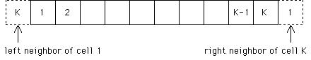

| In general, we assume the state space is of infinite extent. |
| Any computer simulation must be finite, so an infinite state space
cannot be faithfully represented. |
| Yet simply using a finite array (say cell 1
through cell K for a one-dimensional automaton) is not sufficient, because
cells 1 and K, the boundary cells, are different
from the other cells. |
| * Cell 1 has a right neighbor (cell 2), but no left neighbor. |
| * Similarly, cell K
has a left neighbor but no right neighbor. |
| So this array is not homogeneous:
not all cells have the same number of neighbors. |
| The simplest way of dealing with this problem is by wraparound. |
| This has the effect of making the one-dimensional state space into a circle. |
|  |
| For two-dimensional CA, there are two possibilities, one for each neighborhood type. |
|